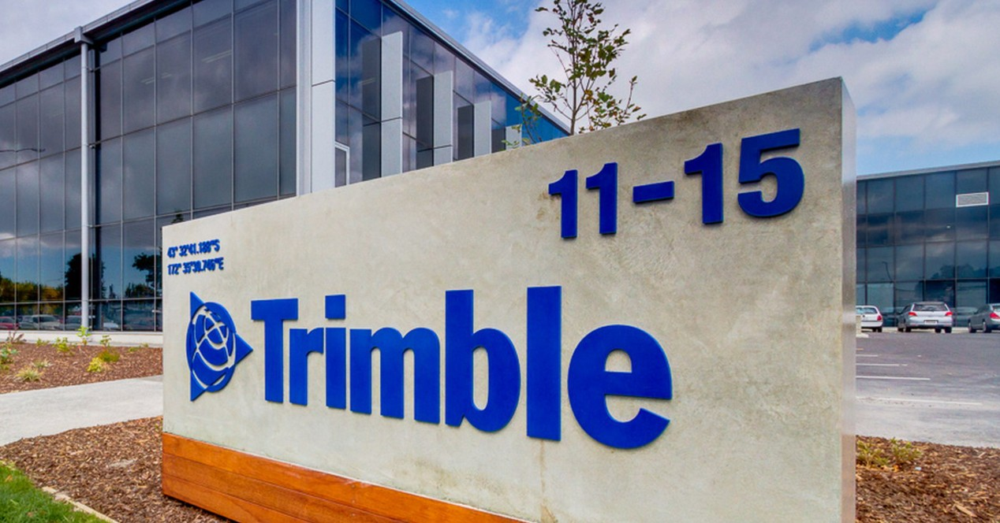

Mes différentes formations

Formation

2019 - 2022
Baccalauréat - Sciences et technologies de l'industrie et du développement durable (STI2D)
Compétences acquises
- HTML/CSS : Concevoir et effectuer des modifications sur le site web concerné de manière précise et esthétique.
- Langage PHP : Utilisé pour dynamiser le site web en permettant l'intégration de fonctionnalités interactives, la gestion de bases de données et la génération de contenu dynamique en fonction des interactions des utilisateurs.
- Projet en Groupe Arduino : Concevoir un robot automatisé capable de suivre un parcours prédéfini à l'aide de lignes de code programmées au préalable.
- Organigramme d'algorithme : Comprendre le binaire, l'hexadécimal et le décimal ainsi que savoir effectuer des conversions entre ces systèmes numériques est essentiel pour maîtriser les fondements de l'informatique et de la programmation.
Formation

2022 - 2024
Brevet de technicien supérieur - Services informatiques aux organisations (SIO)
Compétences acquises
- HTML/CSS : Concevoir et effectuer des modifications sur le site web concerné de manière précise et esthétique.
- Serveur GLPI : Gérer et inventorier le parc informatique de manière centralisée et efficace, résoudre les incidents, assister les utilisateurs et maintenir la qualité des services informatiques
- Serveur Zabbix : Superviser et surveiller une infrastructure, des systèmes et des réseaux à distance de manière proactive et efficace.
- Stormshield : Administrer et superviser le trafic entrant et sortant de manière efficace et sécurisée.
- Serveur Guacamole : Facilite l'accès distant aux applications et aux bureaux virtuels de façon sécurisée et efficace.
- Serveur DNS : Gérer et résoudre les noms de domaine pour faciliter l'accès aux ressources sur Internet de manière transparente et fiable.
- Attaque par ingénierie sociale : Manipuler et exploiter les interactions humaines pour obtenir des informations sensibles ou et a accéder à des systèmes informatiques de manière frauduleuse à l'aide de l'outil "SET".
- Mise en place d'une veille technologique : Surveiller et analyser les nouvelles technologies pour rester à jour et prendre de bonnes décisions.
- VMware et VirtualBox : Pouvoir créer et gérer des machines virtuelles sur un même matériel physique.
- Injection SQL : Technique malveillante consistant à insérer du code SQL non autorisé dans une requête afin de compromettre ou manipuler une base de données, souvent dans le but d'accéder à des données sensibles ou de corrompre le système.
Mes différents stages
Stage
2023
STAGE BTS (Réseau) (5 Semaines) - Lycée Condorcet, 93100 Montreuil
Compétences acquises
- Serveur FOG : Déploiement d'image en locale sur les différents pc des différents salles avec les applications dont les utilisateurs auront besoins .
- Mise en place de certificats : Mettre en place le certificat "RIDF" sur les pc, pour pouvoir avoir la connexion au réseau du lycée et mettre le certificat dans le bon magasin
- Mastering PC : ------------------------------------------------.
Stage
2024
STAGE BTS (Réseau) (5 Semaines) - Trimble France, 94340 Joinville-le-pont
Compétences acquises
- Git : source versionning.
- API Google Drive : ---.
- Docker : ------------.
- Powershell : ------------------.
- Python : --------------.